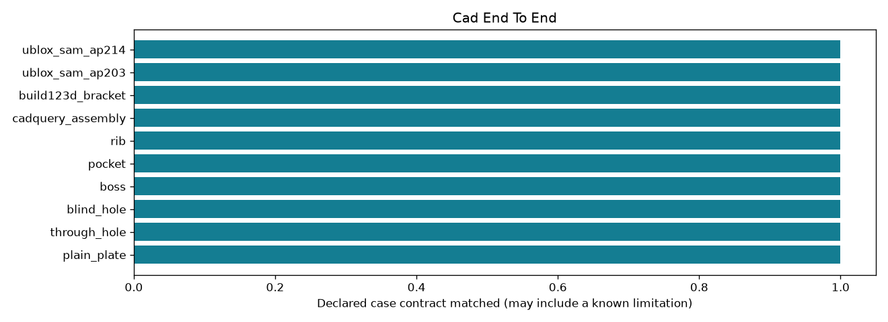

Offline, bounded research controls. A passing check may document a failure or an abstention.
| control_id | outcome | checks_pass |
|---|---|---|
| plain_plate | edited_and_reimported | True |
| through_hole | edited_and_reimported | True |
| blind_hole | edited_and_reimported | True |
| boss | edited_and_reimported | True |
| edited_and_reimported | True | |
| rib | edited_and_reimported | True |
| cadquery_assembly | inspection_preserve_and_geometry_roundtrip | True |
| build123d_bracket | inspection_preserve_and_geometry_roundtrip | True |
| ublox_sam_ap203 | inspection_preserve_and_geometry_roundtrip | True |
| ublox_sam_ap214 | inspection_preserve_and_geometry_roundtrip | True |
Detailed evidence · CSV · Contract
